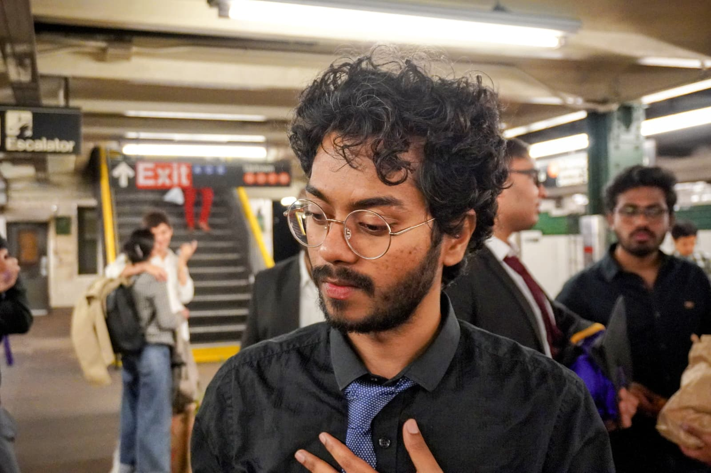

|
Geeta Chandra Raju, Bethala I am a Research Engineer at New York University Abu Dhabi, working in the Embodied AI and Robotics Lab (AIR Lab) (NYU) and the Center for Artificial Intelligence and Robotics (CAIR) at NYUAD, working with Prof Yi Fang. I am also collaborating with Prof. Mengyu Wang on embodied AI projects at the Harvard AI and Robotics Lab. I earned my M.S. in Mechatronics and Robotics at New York University Tandon School of Engineering, supported by the Tandon Merit Scholarship and a Andhra Pradesh State Government Fellowship. I completed my thesis with Prof. Yi Fang and also served as a Research Assistant in the Ai4CE Lab with Prof. Chen Feng and in the MCRL with Prof. Vikram Kapila. I hold a B.Tech in Mechanical Engineering from Acharya Nagarjuna University, Andhra Pradesh, India. After earning my bachelor's degree, I helped develop telepresence conference and inspection robots at a startup, and following my master's I worked as a Research Scientist at NYU before joining NYUAD. |
 |
{kind=link}
ResearchMy research centers on embodied AI and physical intelligence, with a special focus on intuitive human-robot collaboration. I aim to develop adaptive robotic systems—especially humanoids—that seamlessly interact with people in dynamic, real-world environments. |

|
H2-COMPACT: Human-Humanoid Co-Manipulation via Adaptive Contact Trajectory Policies
Geeta Chandra Raju. Bethala, H. Huang, N. Pudasaini, AM Ali, S. Yuan, C. Wen, A. Tzes IEEE-RAS 24th International Conference on Humanoid Robots (Humanoids), 2025 arXiv / Webpage Adaptive contact trajectory policies for seamless human-humanoid co-manipulation tasks, enabling natural collaborative interactions. |

|
Wavelet Policy: Lifting Scheme for Policy Learning in Long-Horizon Tasks
H. Huang, S. Yuan, Geeta Chandra Raju. Bethala, C. Wen, A. Tzes, Y. Fang IEEE/CVF International Conference on Computer Vision (ICCV), 2025 arXiv Novel wavelet-based policy learning approach using lifting schemes for efficient learning in long-horizon robotic tasks. |
|
|
Socially-Aware Robot Navigation Enhanced by Bidirectional Natural Language Conversations Using Large Language Models
C. Wen, Y. Liu, Geeta Chandra Raju. Bethala, S. Yuan, H. Huang, Y. Hao, M. Wang, YS Liu IEEE/RSJ International Conference on Intelligent Robots and Systems (IROS), 2025 arXiv / Webpage / Code Enhanced robot navigation through bidirectional natural language conversations using large language models for socially-aware interactions. |

|
Embodied Chain of Action Reasoning with Multi-Modal Foundation Model for Humanoid Loco-manipulation
Y. Hao*, Geeta Chandra Raju. Bethala*, N. Pudasaini*, H. Huang, S. Yuan, C. Wen, B. Huang arXiv preprint arXiv:2504.09532, 2025 arXiv Development of embodied chain-of-action reasoning using multi-modal foundation models to enhance humanoid robot locomotion and manipulation capabilities. |

|
How secure are large language models (LLMs) for navigation in urban environments?
C. Wen, J. Liang, S. Yuan, H. Huang, Geeta Chandra Raju. Bethala, YS Liu, M. Wang, A. Tzes Under Review (Journal), 2024 arXiv Investigation of security vulnerabilities in large language models when used for autonomous navigation in urban environments, highlighting potential risks and mitigation strategies. |
|
|
Hierarchical Scoring with 3D Gaussian Splatting for Instance Image-Goal Navigation
Y. Deng, S. Yuan, Geeta Chandra Raju. Bethala, A. Tzes, YS Liu, Y. Fang Under Review, 2025 arXiv / Video Advanced instance image-goal navigation using hierarchical scoring with 3D Gaussian splatting for precise object localization. |

|
MapBERT: Bitwise Masked Modeling for Real-Time Semantic Mapping Generation
Y. Deng, S. Yuan, C. Wen, H. Huang, A. Tzes, Geeta Chandra Raju. Bethala, Y. Fang arXiv preprint arXiv:2506.07350 arXiv Real-time semantic mapping generation using bitwise masked modeling for efficient robotic perception and navigation. |

|
Integrating Retrospective Framework in Multi-Robot Collaboration
J. Liang, H. Huang, Y. Hao, Geeta Chandra Raju. Bethala, C. Wen, Y. Fang International Conference on Automation, Robotics, and Applications (ICARA), 2025 arXiv Retrospective framework integration for enhanced multi-robot collaboration and coordination in complex environments. |
|
Website template from jonbarron_website |